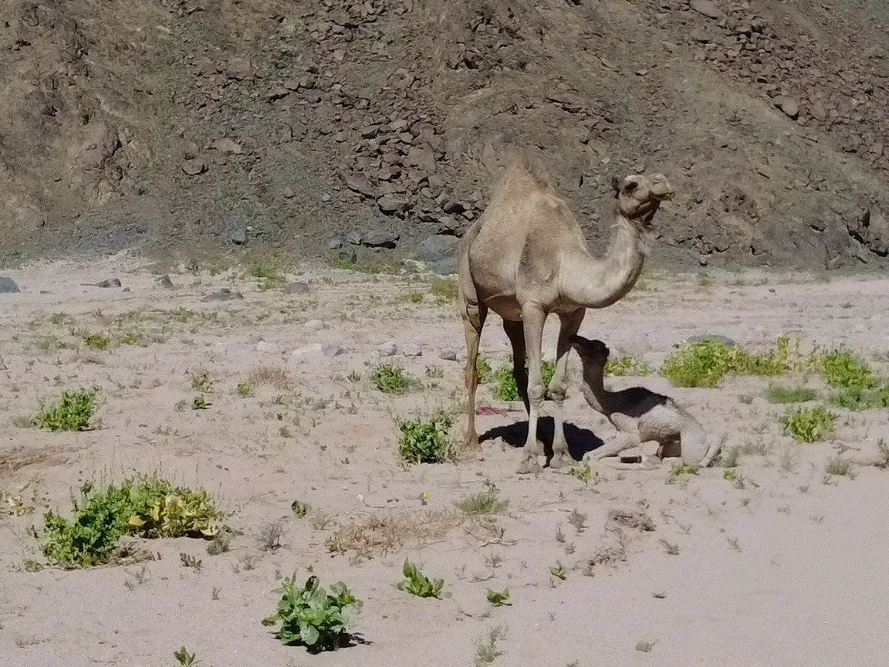

אם יום על גמל משנה את הדרך שבה אתם רואים את המדבר, לילה בו משנה את הדרך שבה אתם זוכרים אותו. טרק הגמלים הזה של יומיים מדהב משלב הליכות בקניונים, כתובות עתיקות, לילה בקמפינג בפתח הקניון הסגור וארוחת צהריים בנווה המדבר עין חודרה, כל הדרך בקצב של המדבר. ג'וזף ואנט מובילים יחד, עם מדריך גמלים בדואי מקומי והגמלים שלו.

יום 1: מהמלון למחנה בין הקניונים
איסוף מהמלון ב-8:00 ונסיעה פנימה לוואדי ע'זאלה, שם מחכים לכם הגמל ומדריך הגמלים. רכיבה והליכה בקניון מביאות אותנו לקניון חמאטה, ואחר כך ארוחת צהריים טרייה במדבר. משם רוכבים לנקב אל-חמידאת, מעבר הרים עתיק, יורדים מהגמלים והולכים לצדם ליד כתובות סלע שהשאירו צלבנים ובדואים קדומים: ספר אורחים כתוב באבן. רכיבה אחרונה מביאה אותנו למחנה בפתח הקניון הסגור, שם ארוחת הערב מתבשלת על האש תחת שמיים בלי שום זיהום אור.

ספר אורחים כתוב באבן, וג'וזף ואנט יודעים לקרוא אותו.
יום 2: הקניון הסגור, נווה המדבר והקניון הלבן
אחרי ארוחת בוקר במחנה, הולכים בקניון הסגור בקרירות של הבוקר, אחד מקניוני הסדק המרשימים בסיני. תה ליד המדורה בזמן שמעמיסים את הרכב והגמלים, ואז רכיבה מביאה אותנו לנווה המדבר עין חודרה, מהעתיקים והיפים בסיני, לארוחת צהריים בין הדקלים. משם הולכים בקניון הלבן, שקירותיו הבהירים והצרים הם מהמצולמים ביותר בסיני, לפני רכיבה אחרונה לכביש והנסיעה הביתה לדהב.


כלול
- איסוף והחזרה בדהב
- רכיבה על גמל עם מדריך גמלים מקומי
- כל הארוחות והמשקאות, כולל ערב, בוקר וצהריים
- מחנה מדבר ללילה בקניון הסגור
- מדריכי המדבר שלכם
- כל דמי הכניסה
לא כלול: טיפים והוצאות אישיות.
מה להביא
- נעלי הליכה טובות
- מכנסיים ארוכים ונוחים, נעימים יותר לרכיבה על גמל ממכנסיים קצרים
- בגדים חמים, לילות המדבר קרים
- דרכון (יש מחסומים בדרכים הפנימיות)
- קצת מזומן למזכרות מהבדואים המקומיים
מחיר
600 אירו לרכב, עד 4 אנשים, לשני הימים
200 אירו לאדם גמל ומדריך גמלים, לשני הימים
זוג משלם 1,000 אירו ליומיים; קבוצה של ארבעה משלמת 1,400 אירו. יותר מארבעה? שלחו לנו הודעה ב-WhatsApp.
יש לכם רק יום אחד?
טיול הגמלים שלנו של יום אחד כולל רכיבה לקניון חמאטה וחזרה, עם הליכה בקניון וארוחת צהריים במדבר באמצע.
לטיול היום בגמלים